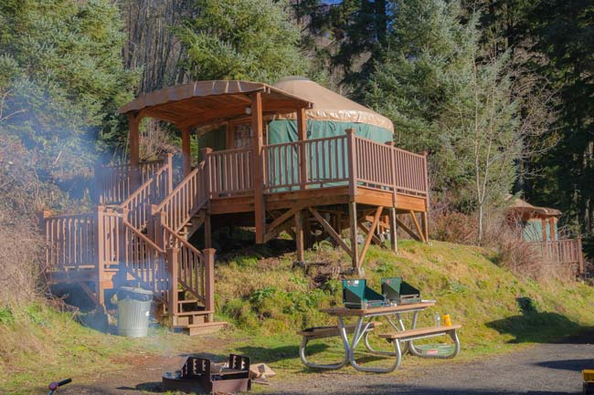
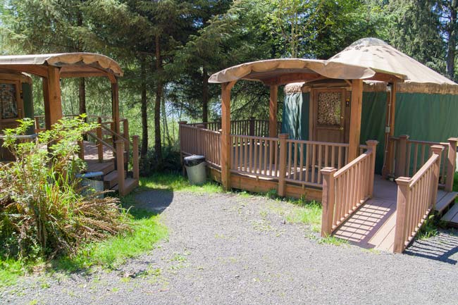
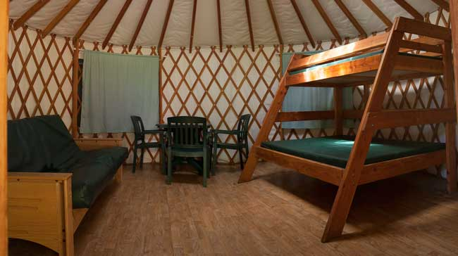
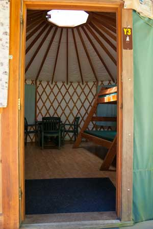
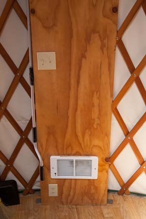
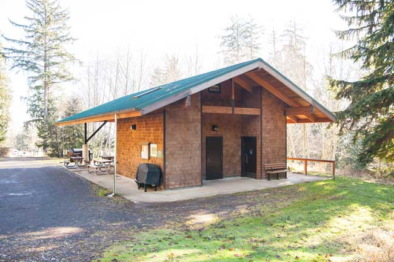

Yurt Camping in Vista Park
Yurts are traditionally used as shelter for nomadic tribes in Asia. The traditional yurt is a portable shelter that is sturdy against most weather conditions. Several of our yurts are handicap accessible as are the restrooms and showers located close to the yurts. With five yurts situated close to the upper sheltered area, this is a great place for large groups to come and enjoy the summer or a quiet get away to stay warm in the winter.
(Bedding is not provided)

Vista Park has five of these circular domed tents. Three are 16’ in diameter and two are 20’ in diameter
(Plenty of floor space for additional
cots or mattresses.)
(Bedding is not provided)
 All of the yurts have decks, fire pits, and picnic tables. Cooking or smoking is not permitted inside the yurts.

The yurts are furnished with a
twin bunk bed, futon couch that converts to a double bed and table and chairs.
(Bedding is not provided)
(Bedding is not provided)
 
This shelter has all the amenities you could need. There are six picnic tables, a very large fire pit, a large sink and counter top space, two large BBQ and one big enough to pull behind a truck. The building also has a shower and restrooms all under cover.